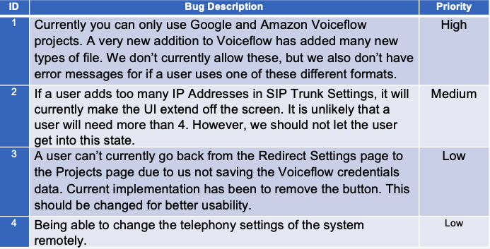
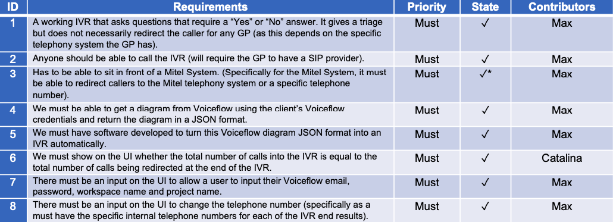
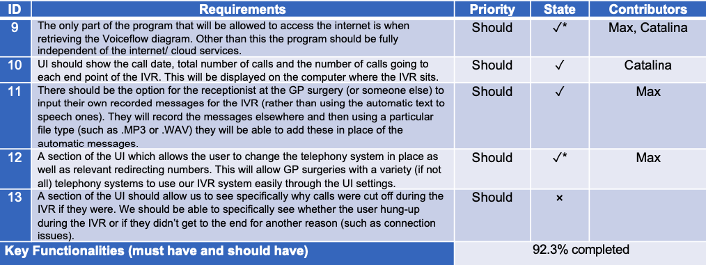
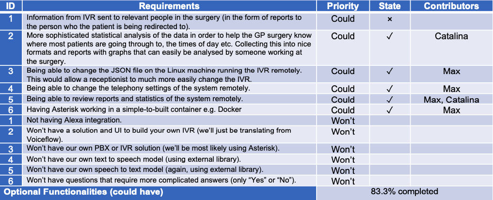
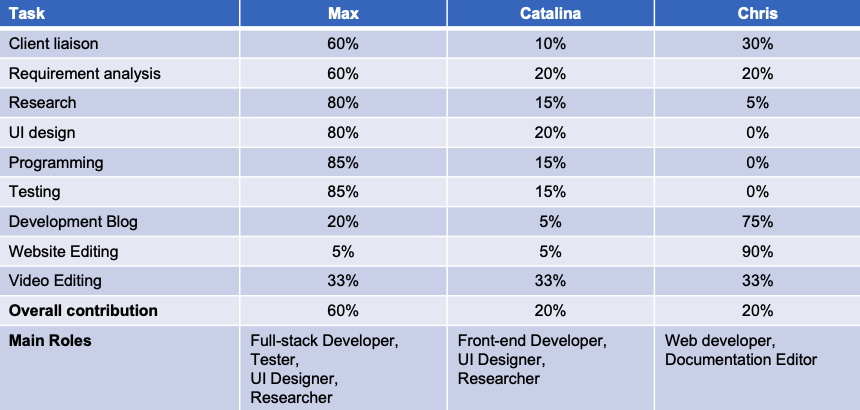

Evaluation Overview
- Summary of achievements
- Bug List
- MoSCoW List
- Individual Contribution Table
- Critical Evaluation
- User Interface, User Experience, Functionality, Stability, Efficiency, Compatibility, Maintainability, Project Management
- Future Work
Summary of achievements
Bug List
Final MoSCoW List
   Note: ✓* indicates that there has been a shift in the requirement approved by our clients, as such the requirement is achieved but no longer neededOverall, we are proud to achieve 92.3% and 83.3% of the functionalities in the key and optional requirements respectively.
Individual Contribution Table
Critical Evaluation
User Interface
Strengths
The user interface managed to incorporate features to fulfil all of our relevant requirements related to the UI. We also went through multiple iterations, taking feedback from both our clients and TA in order to improve the features of the UI. We simplified and improved the UI for usability in many instances in order to come to the final solution.
Weaknesses
Currently the UI doesn’t look as modern as some newer applications, especially those that work on mobile and web interfaces. This mostly was due to limitations with PyQt5 as a library to design the UI. Although the UI functions as intended and is simple to use, due to using PyQt5, it has ended up looking slightly outdated as an application. We would likely need to change to a different language, and different framework to write the UI to majorly improve this.
User Experience for Calling IVR
Strengths
Currently, when set up correctly, a user can call the IVR, answer with “yes” and “no” answers. Depending on how they answer determines what questions they are asked in the triage and ultimately, which resource or number they are redirected to at the end of the call triage. This is exactly as was the intended use. Multiple users can call up simultaneously and everything works perfectly, making the hardware and telephone number provider the only limitations. This means that we fulfilled our requirements and exceeded our client’s expectations. Weaknesses: There are still issues with detecting whether a user specified “yes” or “no”. This could be a major issue if this was used in production. In reality, more extensive testing and continual development of the model would be required. Moreover, when a user answers with “yes” or “no” currently, it takes a few seconds for us to take the audio, analyse it, and decide what the outcome is. When testing with users, we found sometimes that they initially got confused and thought it did not hear them, then repeating their answer. It only takes a couple of seconds, but as we’ve noticed, a user can rightly be quite impatient with the process. In order to improve this, we would have to very thoroughly go through our code, removing any code that is not necessary and improving the efficiency of the code in general.
User Experience of Building and Running IVR
Strengths
We managed to simplify the build process majorly. Asterisk in general would take around 30 minutes to setup. In our final solution, you simply have to download a .deb package, install it with a simple user interface (a single install button). Then you can run the application with a desktop icon. Our client, Joseph Connor, was extremely pleased when we showed him the final build process. The only real requirement of the system for the user to download is Docker.
Weaknesses
The user is required to install Docker before running our program and they must change the user privileges of Docker. These are the only two requirements. It would be better if we could install Docker automatically if it wasn’t installed. It would also be better from both a security standpoint and ease of use if we could find a way that the user did not need sudo privileges with Docker to run the program. The security standpoint, however, is an extremely minor concern in this instance.
Functionality
Strengths
From our requirements, we have fulfilled almost all the functionality required by our clients. Not only this, we have gone above and beyond, by creating a system where an entire telephony system can be created within a few minutes. Our client has told us that this gives the NHS tools and functionalities that just have not been available previously. Many of the functionalities that we have added have not just been added to the specification that we were asked, but a lot more thorough research and testing has gone in, making the solution work to a more exceptional level. We have done extensive research into text to speech and speech to text, getting the best solutions possible integrated into our system. The entire tool works as expected, and there are very few known bugs in the system currently.
Weaknesses
I think there are few weaknesses to our current functionality and what we wanted to achieve. The main weaknesses would be the MoSCoW requirements that we missed. One was that a user should be able to see why a call was cut off during the IVR. The reason why we couldn’t do this was because it would require SIP debugging on Asterisk to be turned on. This would very quickly take up all the storage on the host machine. Potentially we could research more into Asterisk here and find a way to delete the SIP debugging log files periodically and save our data on the system in a condensed format. The other MoSCoW requirement that we missed was to send IVR information to the relevant clinician in a concise format so that they knew better how to deal with the patient. The main reason why we didn’t do this was because the requirement changed with our client, and not even he knew how this should be done. This is likely useful information however, and it may have been useful to have a separate application that could sit on a clinician’s PC that we could send this information to. This would have many security issues involved likely as we are sending the information over the internet. If we had more time we may have worked on this further, trying to develop an appropriate solution. Another point is that currently you need to install Docker and change the permissions of Docker in order to run the program. Automatically installing docker and changing permissions, if possible, would improve the setup process and therefore functionality. Lastly, we still had a few bugs known in the system as mentioned above. This is clearly a slight weakness in the functionality, although there are few that we know of.
Stability
Strengths
Currently our system is stable, we have used stable versions of Asterisk, Docker, and all libraries when testing. Most of the libraries we have used are updated often and well kept. We also recommend using Ubuntu 20.04 LTS to run our system which is one of the latest distributions of Ubuntu, stable and likely to be supported for a very long time. Our solution itself is stable and has had no stability issues that we know of. Our speech to text and text to speech are based on a language pack and Linux speech pack that are already installed on the device.
Weaknesses
One of the libraries we use in order to interface with Asterisk, called pyst2 is not updated as regularly as many other libraries and the documentation is lacking slightly. Currently we have a version installed which works very well with the version of Asterisk we use – Asterisk 13. However, if we decided to upgrade the version of Asterisk we use in the system, we may find that we have issues with this and need to develop our own library. I have not tested this so I cannot confirm. In reality, there is currently little reason for us to upgrade Asterisk though for our functionality.
Efficiency
Strengths
In general, most of our code is relatively efficient. In some areas such as updating PJSIP settings and Dialplan Redirect Settings, we have improved the efficiency significantly by now only writing to the file once. Whereas before we wrote to the file many times and this took more time. We also have tried to write most of the code in an efficient manner. In most places, very minimal wait time is needed by the user, especially on the UI. Our build process has been minimised by extreme lengths. It is now being a very simple .deb package that can be installed with a simple UI and then run using a desktop application. Docker being the only real requirement. From a normal installation of asterisk which usually will take around 30 minutes, this is massively improved. Our client was extremely pleased with how simplified the build and run process had become over the course of the project. The build process was one of the key areas we worked on to make as efficient and easy as possible.
Weaknesses
We have some code that should be made more efficient in order to improve user experience. The first is the code that updates the Dialplan settings initially to create a new IVR on the system. This currently works in the “old” way by writing to the file many times. This decreases the efficiency, and only writing to the file once at the end would improve the efficiency of this API. At the moment the user has to wait a couple of seconds after pressing the Create IVR button. Secondly, the speech to text that occurs live on the Asterisk system should be improved so that it runs faster. At the moment a user has to wait a couple of seconds before they move to the next stage in the IVR. This can cause slight confusion for a user and we should improve the efficiency of this code where possible to decrease this time period as much as possible.
Compatibility
Strengths
We had discussed with our client from an early point that our system would only work on an Ubuntu PC or server. We achieved this and our solution is completely compatible with the hardware specs that we initially discussed. If we build the python application using a Windows or OSX operating system, we can also create an installation for either of these operating systems.
Weaknesses
Unfortunately, due to a current bug with Docker port forwarding on Windows and OSX operating systems, there would be some quite severe security vulnerabilities running our system on these operating systems. The only fix for this would be to have a strict firewall in front of the system. This issue is on the roadmap to be fixed with Docker and so hopefully this will be possible in the future, allowing for wider use cases of our system.
Maintainability
Strengths
We have written our system using object-oriented programming. This was mostly because this makes the code, much more readable, and improves the maintainability and adding of new features. We have written the code in a very clear manner, with techniques in place to allow the functionality to be extended easily. As previously mentioned, we have also used very stable versions of Asterisk, Docker and our python libraries. This means that we should be able to maintain the program, add new features and fix bugs with relative ease going forward. The code is mostly self-documenting in the way it is written, and we’ve added comments and documentation where appropriate. This is so that if we or anyone else wanted to add to the program or change functionality later, they can understand how the current code works with as little effort as possible.
Weaknesses
One of the libraries we use to connect with Asterisk (pyst2) is not updated as often as many other libraries. This means that if we wanted to update to the latest version of Asterisk, if the process of connecting to the Asterisk manager changes, we may not be able to. In this case our only option would be to create our own API since pyst2 is the only current python library that allows you to connect to the Asterisk manager. There is a considerable amount of code in the project and this would require some time for someone new to learn and add to. We currently do not have detailed documentation on every function, how it works, what parameters it takes and what it does. This would be useful documentation to have, especially for our client if he wanted to take over and make more changes to the system, since we have finished our work on the project.
Project Management
Strengths
We managed to effectively communicate with our main client, Joseph Connor. We managed to gain appropriate MoSCoW requirements and in the end, we managed to deliver on almost all of the MoSCoW requirements with the exception of a couple, for which there was a good reason. Our client told us that we went above and beyond what he expected, and that our system gave the NHS capabilities that they had not had previously.
Weaknesses
We didn’t mange to gain as much information and talk with our other clients as much as we would have liked. This was somewhat due to some disagreements in our clients’ expectations, although we still met with the majority of our clients. It was difficult since we had been given many clients for the project. Potentially we could have dealt and communicated better here. Furthermore, we did not contribute equally to the project in the end. Although we all had our relevant parts to work on. Potentially this was due to some issues in project management. In general, the project management was very good, and this is echoed by the extremely positive feedback we received by our industry partner, Joseph Connor.
Future work
If we had more time to work on the project, there are a few things we would do in order to improve the program. These revolve around testing, missed MoSCoW requirements and efficiency of the solution as well as fixing current bugs. Firstly, we would improve the current testing code. We currently have automated regression tests, unit tests, integration tests and tests to test the UI. However, they are not comprehensive and do not have a 100% coverage of the code. In order to improve these, we would focus on using the Coverage.py package to get our coverage of the code up to 100% for both line and branch coverage. We would work to get every button, entry box and drop box tested fully for all possible bugs. This is extremely important before extending the functionality of the program, so that we can run the tests whenever any major changes occur, making sure nothing was broken. For any large software package, this is incredibly important which is why it would be the main priority.
Secondly, we would try to fix some of the current bugs we have found with the system and any others we find. The most important being the fact that Voiceflow recently allowed the creation of many other types of project other than Google and Alexa. We haven’t looked at the JSON for these yet to see if our program can decode them. Likely only small changes to our algorithm would be needed in order to decode and re-encode the JSON, meaning that we should add functionality for this. This is quite key, seeing as they also added the possibility to create an IVR project type. It’s important we can decode the JSON for these formats so that users can use any Voiceflow project they’ve created.
Thirdly, we would improve the efficiency of the solution. Especially we would focus on the speech to text API so that the user doesn’t need to wait a couple of seconds for the next IVR speech message. We would also focus to improve the efficiency of the JSON to Dialplan API so that we only write to the file once, rather than many times throughout. This will improve the speed at which this occurs, minimising user wait time. We would also try and get a way to install Docker and set privileges automatically on the system if it is not installed. This removes the need for the user to manually install it.
We would then try to implement our final MoSCoW requirements. Firstly, we would want to get analytics working that show why a user was dropped from the IVR. This would require the program to automatically delete SIP Debugging logs when they get too full and store the data in another compressed format, relevant for our purpose. We could then discuss further with clinicians and our clients to find our how would be best to send data from the IVR to clinicians. If it was run as an internal system, this would likely be easier and minimise security issues.
A further improvement would also be to overhaul the UI, using a more modern approach. An example would be using a framework that works with JavaScript such as an Electron app. This would take some considerable redesign and work to get fully functioning. It would, however, make the UI more user friendly and give it a more modern feel.
We would also perform much more extensive testing with a much larger group of users to get the “yes” and “no” results from the speech to text as accurate as possible for a much larger range of accents. This is extremely important if this system was going to be deployed around the UK, as there is a huge diversity of speech. Our current language model we used is also based on US male data predominantly. Training our own language model based on UK speech could significantly improve accuracy.
Finally, we would try to add a call queue when a user gets redirected. At the moment if the line is busy when a user is redirected after they’ve been through the triage, they will still be redirected. This means the busy clinician would just receive another incoming call at the same time. In the future we would like to implement a call queue. This would mean that if the clinician was busy, you would be held in a call queue with music playing, until the clinician is free for you. A call queue can be implemented in Asterisk, although it may require an additional Twilio number in our case. In any case, we would need to carry out more research in this specific area.